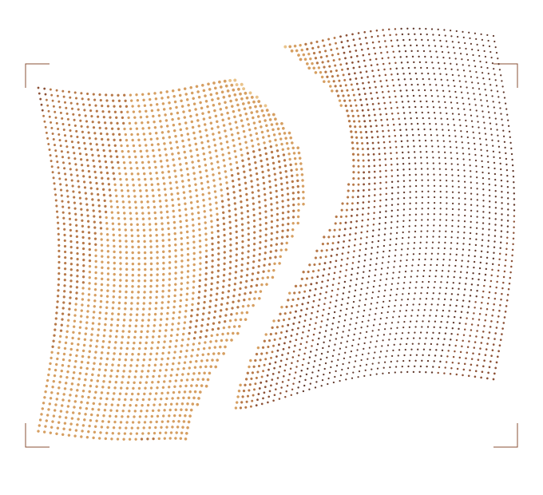

ESTUDIO 04 / COLORES CON PARENTESCO
Más profundidad.
No más ruido.
Entre un solo tono y cinco acentos sueltos hay otro camino: una gama de sombras, medios y luces que cambia de color sin perder su familia. Tres propuestas, una misma composición.
H1 / ARMONÍA
Marea mineral
Petróleo → turquesa → celadón
OBSERVAR · CONSTRUIR · RESPONDER
Alguien tiene
que mirar a
las máquinas.
Construir con máquinas.
Sin renunciar al criterio.
NO FATE.

SOMBRA → MATERIA → LUZ
Estos tonos modelan la imagen. No son siete colores de botones.
Ver valores y roles
#183039 · #244C5B · #346E7B · #4D9199 · #73B7B0 · #A8D3BA · #D5E5CF
Fondo #10191C · texto #E4EEEA · énfasis #94CCBB. Los tonos oscuros de la rampa son decorativos, no texto.
Azul y verde comparten el recorrido. Las sombras son petróleo; la luz se vuelve celadón. Hay cambio de color sin saltar a otra familia.
Más observatorio, con una luz viva. Mi primera candidata para recuperar riqueza sin dispersión.
H2 / ARMONÍA
Ámbar fundido
Caoba → cobre → miel
OBSERVAR · CONSTRUIR · RESPONDER
Alguien tiene
que mirar a
las máquinas.
Construir con máquinas.
Sin renunciar al criterio.
NO FATE.

SOMBRA → MATERIA → LUZ
Estos tonos modelan la imagen. No son siete colores de botones.
Ver valores y roles
#39231E · #60382B · #8C5136 · #B77949 · #D69F62 · #E9C38A · #F0DEB6
Fondo #1B1512 · texto #F1E7D9 · énfasis #E6BE87. Los tonos oscuros de la rampa son decorativos, no texto.
No es solo naranja sobre negro: el cobre vive en los medios y la miel aparece en los bordes luminosos. Las sombras conservan profundidad rojiza.
Más taller y material. Es la evolución cálida de A, con una gama completa en vez de un único cobre.
H3 / ARMONÍA
Ópalo nocturno
Pizarra → índigo gris → malva
OBSERVAR · CONSTRUIR · RESPONDER
Alguien tiene
que mirar a
las máquinas.
Construir con máquinas.
Sin renunciar al criterio.
NO FATE.

SOMBRA → MATERIA → LUZ
Estos tonos modelan la imagen. No son siete colores de botones.
Ver valores y roles
#252D3D · #3F4C68 · #5F7094 · #8291B3 · #AAAACC · #C9B5CE · #E8D7E2
Fondo #17191F · texto #E9E7F0 · énfasis #C8BEDD. Los tonos oscuros de la rampa son decorativos, no texto.
Azules grisáceos y malvas próximos. El color cambia con la luz en una superficie concreta, no en una nube detrás de toda la página.
Más cinematográfica. Recupera la idea de iridiscencia sin combinar verde y violeta ni saturar el fondo.
LA DIFERENCIA CON LA RONDA ANTERIOR
El color ahora construye volumen.
Una base tranquila, texto legible y una zona donde la gama puede desplegarse. Sin sumar colores a cada elemento y sin reducir toda la identidad a un acento apagado.
Compará primero la imagen completa; después la rampa. Si una te gusta, ese sistema puede pasar a la página original. No hace falta aprobar todavía la forma del pliegue ni los textos nuevos.
Estudio estático aislado. SVG de exploración, no cambios al motor ni a la landing. La paleta no está aprobada y la escena no implica una propuesta de servicio.